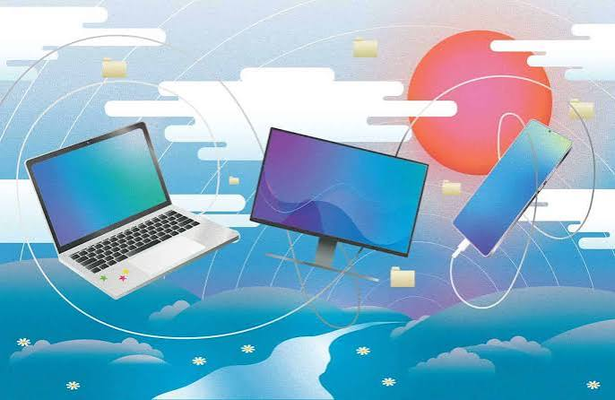

Brand History
Dell was founded in 1984 by Micheal Dell. The company grew from a personal computer business into a global technology company.

Explore detailed reviews and scientific comparisons of computer brands, processors, graphics cards, performance, display quality and modern technologies.
Discover the world's leading computer brands and explore their technologies,strengths and innovations.
Explore Mac computers, Apple silicon and the technologies behind their performance.
Discover Dell computers, professional laptops and performance-focused systems.
Learn about HP laptops, desktop computers and solutions for work and everyday use.
Select a computer brand above to discover its history, technologies, products and key strengths.
Dell was founded in 1984 by Micheal Dell. The company grew from a personal computer business into a global technology company.
Dell offers laptops, desktop computers, workstations and monitors. Its product families include XPS, Inspiron, Latitude, precision and Alienware.
Dell computers can include modern processors, graphics cards, fast storage and advanced cooling systems, depending on the model.
Dell offers a wide range of computers for students, home users, businesses and professionals, with options for different tasks and budgets.
Many Dell computers use Microsoft Windows, while some models also support Linux. The available operating system depends on the model.
Lenovo was founded in china in 1984. It grew into a global technology company and acquired IBM's personal computer business in 2005.
Lenovo offers laptops, desktop computers, workstations, tablets and gaming computers. Its product families include ThinkPad, thinkBook, IdeaPad, Yoga and Legion.
Lenovo computers feature technologies such as modern processors, advanced cooling systems, AI-powered features and high-resolution displays, depending on the model.
Lenovo offers a wide range of devices for students, professionals, businesses and gamers, with different designs, performance levels and price ranges.
Most Lenovo computers come with Microsoft Windows, while selected models support Linux or other operating systems.
HP, short for Hewlet-Packard, was founded in 1939 by Hewlet and Dave Packard in California, USA. The company leter become a major global computer and technology brand.
HP offers laptops, desktop computers, workstations, printers and other technology products. Its computer families include pavilion, Envy, Spectre, EliteBook, ProBook and OMEN.
HP computers can feature modern processors, high-resolution displays, advanced security features and cooling technologies, depending on the model.
HP provides computers for students, home users, businesses and gamers, offering a broad range og designs, performance levels and prices
Most HP computers use Microsoft Windows. Selected models also support Linux or other operating systems.
ASUS was founded in Taiwan in 1989. The company become known worldwide for its computer hardware, laptops and gaming technology.
ASUS offers laptops, desktop computers, motherboards, graphics cards and gaming devices. Its laptop families include Zenbook, Vivobook, ExpertBook, ProArt and ROG.
ASUS develops computer hardware and features such as advanced cooling systems, high-refresh-rate displays and performance-focused components, depending on the model.
ASUS offers a wide range of computers for everyday use, professional work and gaming, with products available at defferent performance levels and peices.
Most ASUS laptops come with Microsoft Windows. Some models support Linux or other operating systems.
Acer was founded in Taiwan in 1976. It became an international technology company known for its computers and digital devices.
Acer offers laptops, desktop computers, monitors and gaming devices. Its product families include Aspire, Swift, TravelMate, Predator and Nitro.
Acer develops computer technologies such as high-resolution displays, performance-focused hardware and cooling systems for selected models.
Acer provides computers for students, everyday users, professionals and gamers, with products available at different performance levels.
Most Acer computers use Microsoft Windows. Some models also support Linux or other operating systems.
MSI, also known as Micro-Star International, was founded in Taiwan in 1986. The company is widely known for its computer hardware and gaming technology.
MSI produces gaming laptops, desktop computers, motherboards, graphics cards and monitors. Its product families include Raider, Stealth, Titan and Katana.
MSI develops performance-focused computer hardware, gaming displays and cooling systems designed for demanding workloads and gaming.
MSI is particularly known for its gaming computers, performance-oriented hardware and products designed for gamers and content creators.
Most MSI laptops and desktop computers use Microsoft Windows. Compatible models may also support Linux or other operating systems.
Samsung was founded in South Korea in 1938. Samsung Electronics later became a major global company in consumer electronics and technology.
Samsung offers laptops, monitors, tablets, smartphones and computer displays. Its Galaxy Book family includes laptops designed for everyday use and professional work.
Samsung develops display technologies, memory chips, storage devices and hardware used in many computers and electronic products.
Samsung is known for its display technology, memory products and integration between its Galaxy devices and compatible computers.
Samsung Galaxy Book laptops generally use Microsoft Windows. The operating system may vary by device and model.
Microsoft was founded in 1975 by Bill Gates and Paul Allen. It became one of the world's leading technology companies, developing software, computers and digital services.
Microsoft's main computer products include Surface laptops, Surface Pro devices, accessories and computer software. The company also develops Microsoft 365 and cloud services.
Microsoft develops Windows, cloud computing technologies, artificial intelligence tools and software for productivity, communication and business.
Microsoft is known for its software ecosystem, Windows operating system, productivity applications, cloud services and integration between its devices and software.
Windows is Microsoft's main desktop operating system. It is widely used on personal computers for education, professional work, gaming and everyday tasks.
Gplus is a brand name used for technology and electronic products. Its history and ownership may vary depending on the country and the specific manufacturer.
Products sold under the Gplus name may include electronic devices and computer-related products. The exact product range depends on the manufacturer.
The technologies used in Gplus products depend on the specific device and its manufacturer. Product specifications can help identify the hardware and features available.
The strengths of Gplus products depend on their specifications, price, features and after-sales support. These details should be evaluated for each specific product.
The operating system depends on the type of Gplus device. If the product is a computer, its operating system should be confirmed from the specifications of that particular model.
LG is a South Korean company with roots dating back to 1947. It became widely known for developing consumer electronics, home appliances and display technologies.
LG produces monitors, computer displays, laptops in selected markets, televisions and other electronic products. Its UltraGear monitors are designed especially for gaming.
LG is known for display technologies, including OLED screens, as well as high-resolution monitors and display features designed for entertainment, creative work and gaming.
LG's strengths include display quality, a wide range of monitors, gaming display features and experience in consumer electronics. Features vary by product and model.
LG monitors do not require their own computer operating system. When connected to a computer, they work with that computer's operating system, such as Windows or macOS. LG laptops, where available, may use Windows.
Huawei was founded in China in 1987. The company develops telecommunications equipment, consumer electronics and computing products for markets around the world.
Huawei's computer-related products include MateBook laptops, monitors and accessories. The company also produces smartphones, tablets and networking equipment.
Huawei develops technologies for computer hardware, telecommunications, wireless connectivity and device integration. Its product features vary by model and market.
Huawei is known for its telecommunications expertise, laptop design, connectivity features and integration between compatible devices.
Many Huawei MateBook laptops use Microsoft Windows. The available operating system can vary by model and market, so the specifications of each device should be checked.
Apple Inc. was founded in 1976 by Steve Jobs, Steve Wozniak and Ronald Wayne. The company become widely known foe developing personal computers that helped make computing more accessible. Over the years, Apple expanded its computer linup with products such as the Macintosh, MacBook and iMac. Today, the company is known for combining hardware. software and industrial design in its products.
Apple offers several types of computers designed for different needs. The MacBook Air is a lightweight laptop suited to everyday tasks,study and productivity. The MacBook Pro is designed for demanding professional workloads, including software development, video editing and creative work. The iMac is an all-in-one desktop computer that integrates the computer and display in to a single design, while the Mac mini and Mac Studio provide compact desktop solutions for different performance requirements.
Apple develops its own Apple silicon chips, including the M-series processors used in many Mac computers. These chips integrate key computing components to deliver performance and energy efficiency. Apple also develops macOS and optimizes its software to work with its hardware. Other important technologies include unified memory architecture in supported Apple silicon systems, advanced media-processing capabilities and close integration between Apple devices and services.
Apple's computer products have several notable strengths. The company designs its hardware and operating systems to work closely together, which can provide a consistent user experience. Many Mac models offer strong performance for creative and professional tasks, while Apple silicon can deliver good performance per watt. Apple is also known for its product design, long-term software support for many devices and integration with other Apple products. However, the value of these strengths depends on the specific model and the user's needs.
Mac computers use macOS, Apple's desktop operating system. macOS provides a graphical user interface, file management, multitasking and built-in tools for everyday and professional work. It is designed to work closely with Apple silicon hardware on supported Mac models and includes security features such as system protections and built-in encryption capabilities. Software compatibility varies, so users should check whether the applications they need are supported by their particular Mac and macOS version.